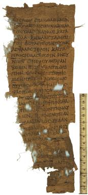

Demosthenes, De
corona,167-169.
AM 9051 (=P. Oxy. XI 1377), I c. BC

Also
available: a larger image (245k)
Background and Physical Properties
Publ./Side: Recto
Material: Papyrus
Items: 1
Size: 29.1 x 12.4 cm.
Lines: 24
Negative: Transparency
Conservation Status:
Status: Published
--------------------------------------------
Contents
Date: I c. BC
Provenance: Oxyrhynchus, Oxyrhynchite nome, province of Egypt
Acquisition: AM 9051
Language: Greek
Genre: Literary
Author: Demosthenes
Type of Text/Title of Work: De corona
Content: 167-169
--------------------------------------------
Information on Publications
First edition:
Series and volume: The Oxyrhynchus Papyri XI
Editor: B. P. Grenfell and A. S. Hunt
Year: 1915
Pg/Nr: 1377
Photo:
Published: 1915